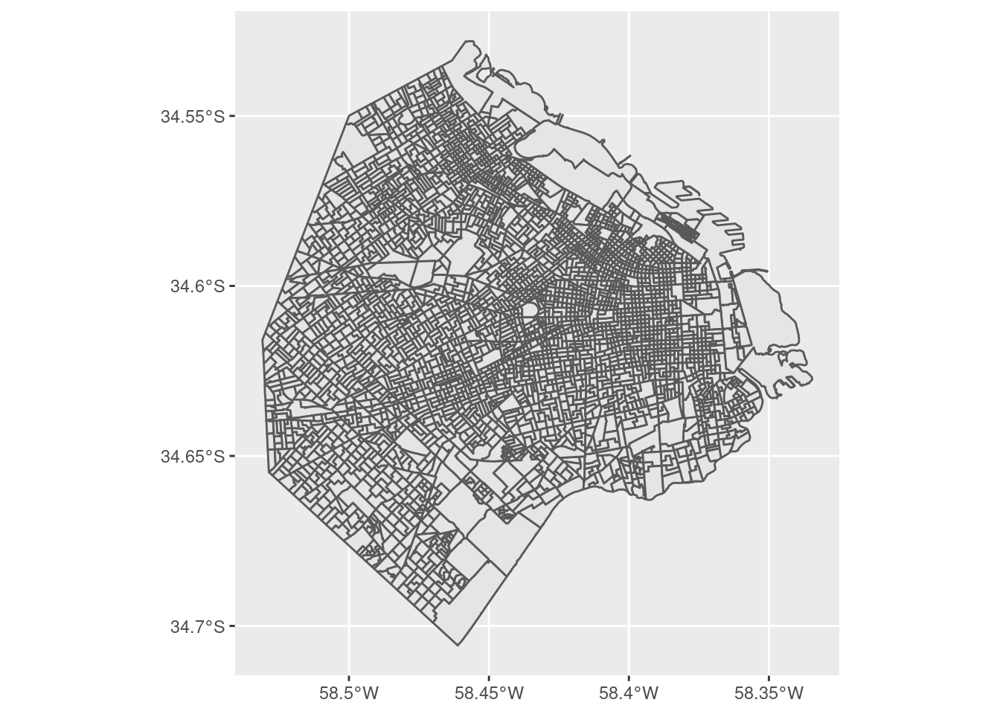
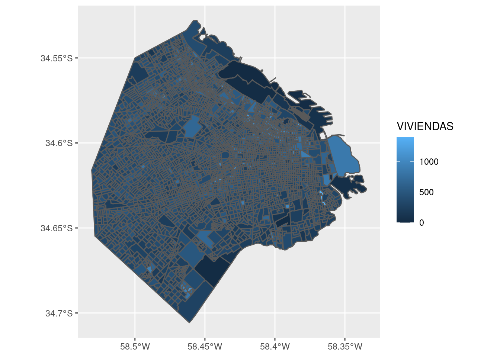
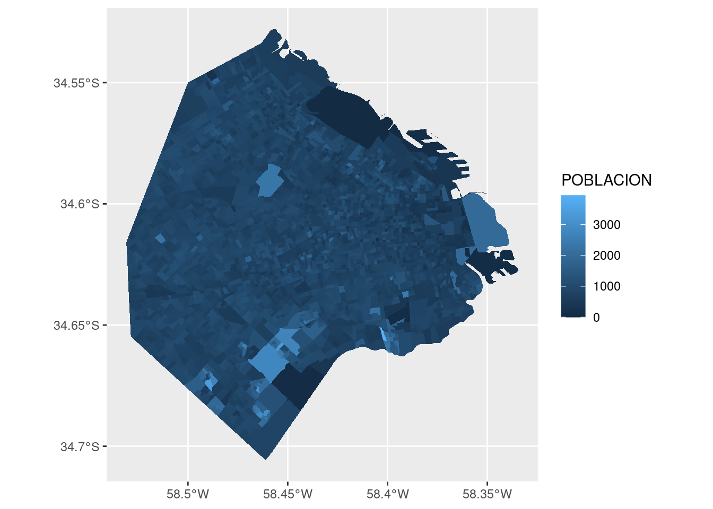
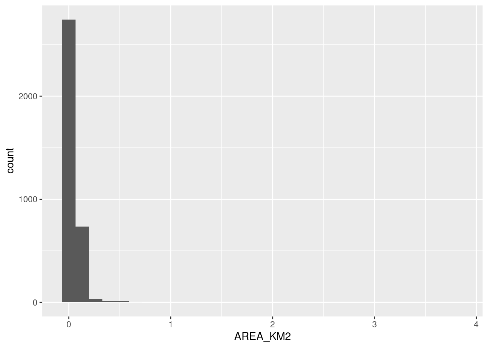

La visualización de información geográfica por excelencia es el mapa, ¡por supuesto!
Nuestro aliado ggplot() se encarga de ello.

Ademas de encontrarnos con la reconocible silueta de la ciudad, comprobamos lo que el resumen de la data había sugerido: la mayoría de los radios censales tiene un tamaño similar, pero existe un puñado que es considerablemente más extenso que el promedio. Los “mega radios” seguramente corresponden a zonas poco habitadas, por lo que se asume que un censista puede terminar de encuestar a todos los residentes en un día.
Podemos analizar eso mismo: ¿cuántas viviendas hay por radio?

EL grosor de la línea que traza las fronteras entre radios hace difícil determinar el color de relleno. Esto suele pasar cuando se grafica información geográfica intrincada como la de los radios censales. Una solución es definir el color de la línea como NA, que para ggplot significa “ninguno”. Lo hacemos así:

Así esta mejor. Nótese que definimos el color por fuera de aes(). Cuando queremos asignar un valor fijo a alguno de los atributos estéticos (y no dependiente de una variable) siempre va fuera de la función aes().
En cuanto al gráfico, observamos que los radios censales más grandes tienden a ser poco poblados, con algunas excepciones, en particular el gran radio censal al oeste. ¿A qué barrio corresponde?
Hemos logrado otro de nuestros gráficos ilegibles, intentando mostrar demasiadas variables categóricas a la vez. Una forma de resolver el dilema es filtrando los datos para aislar los casos de interés. Del menú de visualizaciones que aprendimos en el capítulo 2, podemos elegir el histograma para mostrar la distribución de tamaños de nuestros radios censales.
## `stat_bin()` using `bins = 30`. Pick better value with `binwidth`.
Cómo había anticipado el resumen vía summary(), la gran mayoría de los radios tiene menos de medio km^2. Unos pocos superan los 2 km^2, así que vamos a aislar esos para saber a que barrio corresponden.
filtrados <- radios %>%
filter(AREA_KM2 > 2)
ggplot() +
geom_sf(data = filtrados, aes(fill = BARRIO)) +
labs(title = "Radios censales de mayo tamaño")Nuestro gran radio censal al este, con población considerable, corresponde a Puerto Madero.
Llevemos ahora nuestra atención al tema de la cantidad de viviendas superando a la de hogares. Tal situación implica que hay una tasa de vacancia alta en el radio censal. Podemos verla en el mapa graficando la intensidad de la relación entre viviendas y hogares, expresándola como la división de una por otra.
Hay un radio censal que parece brillar, destacándose entre los demás. ¿Dónde está? Esta vez lo resolvemos en forma analítica en lugar de visual, usando los verbos de transformación de datos. Vamos a definir una variable nueva, con la tasa entre viviendas y hogares que ya usamos para el gráfico. Luego vamos a ordenar el dataframe por orden descendiente de la tasa, y usando head() nos quedamos sólo con los primeros valores, que corresponden a los más altos:
radios %>%
mutate(viv_vs_hogares = VIVIENDAS / HOGARES) %>%
arrange(desc(viv_vs_hogares)) %>%
head()## Simple feature collection with 6 features and 9 fields
## geometry type: MULTIPOLYGON
## dimension: XY
## bbox: xmin: -58.38038 ymin: -34.62205 xmax: -58.35869 ymax: -34.60085
## geographic CRS: WGS 84
## RADIO_ID BARRIO COMUNA POBLACION VIVIENDAS HOGARES HOGARES_NBI AREA_KM2 viv_vs_hogares
## 1 1_13_15 PUERTO MADERO 1 0 6 0 0 0.07899011 Inf
## 2 1_13_3 PUERTO MADERO 1 45 473 20 0 0.05698617 23.650000
## 3 1_9_19 SAN NICOLAS 1 119 405 61 6 0.06236044 6.639344
## 4 1_12_10 SAN NICOLAS 1 296 629 101 1 0.04438025 6.227723
## 5 1_12_12 SAN NICOLAS 1 499 471 90 17 0.03108456 5.233333
## 6 1_9_15 SAN NICOLAS 1 238 608 118 13 0.03287564 5.152542
## geometry
## 1 MULTIPOLYGON (((-58.36131 -...
## 2 MULTIPOLYGON (((-58.36094 -...
## 3 MULTIPOLYGON (((-58.37606 -...
## 4 MULTIPOLYGON (((-58.37879 -...
## 5 MULTIPOLYGON (((-58.37879 -...
## 6 MULTIPOLYGON (((-58.37473 -...Otra vez Puerto Madero, que contiene un radio censal con una vacancia notable, el segundo de la lista: con 473 viviendas disponibles, se asentaron allí sólo 20 hogares. El que se llevó el primer puesto, también en Puerto Madero, obtuvo una tasa de “Inf”, o infinito. Esto ocurre porque allí tenemos 0 hogares, y al dividir por esa cantidad no se obtiene un número. Conociendo al barrio, podemos sospechar que la especulación inmobiliaria es la causa de las viviendas vacías. El resto de los radios censales del ranking corresponde a San Nicolás, el barrio más céntrico de la ciudad, donde la gran cantidad de departamentos dedicados a uso comercial o profesional explicaría la baja cantidad de hogares.
Algo importante que no hemos mencionado aún es la importancia de “normalizar” las variables antes de mostrarlas en un mapa. Con esto me refiero a que, en general, no interesan tanto los valores absolutos sino puestos en contexto. Ejemplos típicos:
Con nuestros datos, podemos visualizar la densidad de la población así:
ggplot() +
geom_sf(data = radios, aes(fill = POBLACION/AREA_KM2), color = NA) +
scale_fill_viridis_c() +
labs(title = "Densidad de población",
subtitle = "Ciudad Autónoma de Buenos Aires",
fill = "hab/km2")Este último gráfico representa de forma mucho mas precisa la distribución de habitantes en la ciudad, haciendo saltar a la vista los núcleos con mayor densidad de población. De paso, aprendimos un truco nuevo: agregando scale_fill_viridis_c() le pedimos a ggplot que utilice la escala de colores conocida como “viridis”, diseñada por expertos en visualización para ser fácil de leer… y lucir bien.